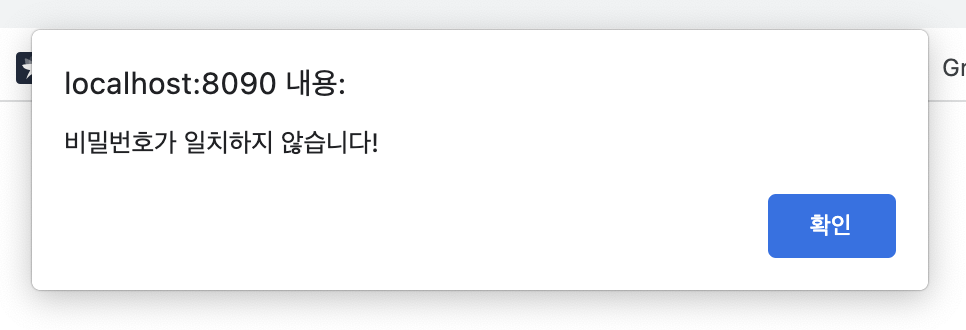

에러해결 Log) java.lang.IllegalStateException 응답이 이미 커밋된 후에는 sendRedirect()를 호출할 수 없습니다.
사용환경
- MacBook Air (M1, 2020) 16GB
- JDK 8
- Eclipse 2021-12
- tomcat 8.5
에러의 발생
- 현재
MVC Model2패턴을 적용한 웹 사이트를 만드는 프로젝트를 진행중이다. - 페이지 이동 요청이 들어왔을 때
front에서 이동할 페이지를 매핑한 다음 서블릿에서 필요한 액션들을 처리한 후 최종 목적지로 이동하게 된다. - 나는
마이페이지기능을 구현하고 있었는데, 로그인 후 마이페이지에 입장하려면 비밀번호를 한 번 더 입력한 후 일치하면 회원 정보를 수정할 수 있는 페이지로 이동하고 그렇지 않으면 비밀번호가 틀렸다는 알림창을 띄우고 싶었다. - 그래서
JAVA코드에서JavaScript코드를 사용할 수 있어야 했다. - 그리하여 처음에 시도했던 모델… 👇
MemberFrontConroller.java
import java.io.IOException;
import javax.servlet.RequestDispatcher;
import javax.servlet.ServletException;
import javax.servlet.http.HttpServlet;
import javax.servlet.http.HttpServletRequest;
import javax.servlet.http.HttpServletResponse;
import com.project.cafe.api.sms.SmsService;
public class MemberFrontController extends HttpServlet
{
protected void doProcess(HttpServletRequest req, HttpServletResponse resp) throws ServletException, IOException
{
// 1. 전달되는 가상주소 계산
// 매핑된(.me로 끝나는) 주소를 받아옴
String requestURI = req.getRequestURI();
System.out.println("requestURI : " + requestURI);
// 매핑된 해당 프로젝트 주소를 구함
String ctxPath = req.getContextPath();
System.out.println("ctxPath : " + ctxPath);
// 매핑된 주소 - 프로젝트 주소 = 계속 바뀔 뒷자리 주소 구함
String command = requestURI.substring(ctxPath.length());
System.out.println("command : " + command);
System.out.println("C : 가상주소 계산 완료\n");
// 1. 전달되는 가상주소 계산
// 2. 가상주소 매핑
Action action = null;
ActionForward forward = null;
if (command.equals("/MemberJoinAction.me"))
{
System.out.println("C : /MemberJoinAction.me 호출");
System.out.println("C : 이전 페이지 정보를 가져와서 DB 테이블에 저장 후 페이지 이동");
action = new MemberJoinAction(); // 인터페이스를 통해 객체를 생성함으로써 약한결합이 되도록 한다.
try
{
forward = action.execute(req, resp);
}
catch (Exception e)
{
e.printStackTrace();
}
}
else if (command.equals("/memberUpdateAction.me"))
{
System.out.println("C : /memberUpdateAction.me 호출");
action = new MemberUpdateAction();
try {
forward = action.execute(req, resp);
}
catch (Exception e) {
e.printStackTrace();
}
}
else if (command.equals("/CheckPassAction.me"))
{
System.out.println("C : /CheckPassAction.me 호출");
action = new CheckPassAction();
try {
forward = action.execute(req, resp);
}
catch (Exception e) {
e.printStackTrace();
}
}
else
{
forward = new ActionForward();
if (command.equals("/main.me"))
{
System.out.println("C : 메인페이지 호출");
forward.setPath("./main/main.jsp");
}
else if (command.equals("/join.me"))
{
System.out.println("C : 회원가입 페이지 호출");
forward.setPath("./member/join.jsp");
}
else if (command.equals("/login.me"))
{
System.out.println("C : 로그인 페이지 호출");
forward.setPath("./member/login.jsp");
}
else if (command.equals("/logout.me"))
{
System.out.println("C : 로그아웃 페이지 호출");
forward.setPath("/logout.me");
}
else if (command.equals("/checkPass.me"))
{
System.out.println("C : 비번 한 번 더 입력하는 페이지 호출");
forward.setPath("./member/checkPass.jsp");
}
else if (command.equals("/myPage.me"))
{
System.out.println("C : 마이페이지 호출");
forward.setPath("./member/myPage.jsp");
}
forward.setRedirect(false);
}
System.out.println("C : 가상주소 매핑 완료\n");
// 2. 가상주소 매핑
// 3. 페이지 이동
if (null != forward) // 페이지 이동정보가 있을 때
{
if (forward.isRedirect())
{
System.out.println("C : sendRedirect 방식 - " + forward.getPath() + " 이동");
resp.sendRedirect(forward.getPath());
}
else
{
System.out.println("C : forward 방식 - " + forward.getPath() + " 이동");
RequestDispatcher dis = req.getRequestDispatcher(forward.getPath());
dis.forward(req, resp);
}
System.out.println("C : 페이지 이동 완료");
}
// 3. 페이지 이동
}
@Override
protected void doGet(HttpServletRequest req, HttpServletResponse resp) throws ServletException, IOException
{
doProcess(req, resp);
}
@Override
protected void doPost(HttpServletRequest req, HttpServletResponse resp) throws ServletException, IOException
{
doProcess(req, resp);
}
}
- 이동하고자 하는 페이지로 매핑해 주는
front
CheckPassAction.java
import java.io.PrintWriter;
import javax.servlet.http.HttpServletRequest;
import javax.servlet.http.HttpServletResponse;
import com.project.cafe.member.db.MemberDAO;
import com.project.cafe.member.db.MemberDTO;
public class CheckPassAction implements Action
{
@Override
public ActionForward execute(HttpServletRequest request, HttpServletResponse response) throws Exception
{
System.out.println("M : CheckPassAction - execute() 호출");
// 파라메터 저장
String id = request.getParameter("id");
String pass = request.getParameter("pass");
// 회원정보 저장
MemberDTO dto = new MemberDTO();
dto.setId(id);
dto.setPass(pass);
response.setContentType("text/html; charset=utf-8");
PrintWriter out = response.getWriter();
ActionForward forward = new ActionForward();
// DB 연동해서 아이디와 비밀번호가 일치하는 지 확인
MemberDAO dao = new MemberDAO();
int result = dao.loginCheck(dto);
if (1 == result)
{
// 비번 일치
forward.setPath("./myPage.me");
}
else
{
// 비번 불일치
out.println("<script>alert('비밀번호가 일치하지 않습니다!');</script>");
forward.setPath("./checkPass.me");
}
forward.setRedirect(true);
out.close();
return forward;
}
}
front의 페이지 매핑 형태가forward형식이기 때문에Action클래스에서 DB 연동 동작을 처리한 후 이동할 페이지 정보를front로 리턴해서 이동하는 형식을 취했다.-
그런데 이렇게 실행하니까 동작이 제대로 안 됨…
-
java.lang.IllegalStateException: 응답이 이미 커밋된 후에는, sendRedirect()를 호출할 수 없습니다.
- 👆 이런 에러 메시지가 나오며 이동이 제대로 되질 않았다 ㅠ.ㅠ
- 그래서 오늘 학원 와서 선생님한테 여쭤보니까 자바 코드와 자바스크립트 코드를 함께 썼을 때엔 자바스크립트 코드가 가장 나중에 실행되기 때문에 위와 같은 형태로 쓰면 자바 코드가 먼저 실행 되면서 자바스크립트가 알림창을 띄우기 전에 이미 다른 페이지로 이동한 상태가 되는 것이었다.
- 그래서 이미 이동한 상태에서 자바스크립트 코드로 알림창을 띄우려 하니 충돌이 생겨서 제대로 동작하지 않는 것이었다. 커밋이 되었다는 뜻이 이러한 의미였다.
문제 해결
- 그래서 자바스크립트 코드로 페이지를 이동하도록 수정했다.
CheckPassAction.java
import java.io.PrintWriter;
import javax.servlet.http.HttpServletRequest;
import javax.servlet.http.HttpServletResponse;
import com.project.cafe.member.db.MemberDAO;
import com.project.cafe.member.db.MemberDTO;
public class CheckPassAction implements Action
{
@Override
public ActionForward execute(HttpServletRequest request, HttpServletResponse response) throws Exception
{
System.out.println("M : CheckPassAction - execute() 호출");
// 파라메터 저장
String id = request.getParameter("id");
String pass = request.getParameter("pass");
// 회원정보 저장
MemberDTO dto = new MemberDTO();
dto.setId(id);
dto.setPass(pass);
response.setContentType("text/html; charset=utf-8");
PrintWriter out = response.getWriter();
// DB 연동해서 아이디와 비밀번호가 일치하는 지 확인
MemberDAO dao = new MemberDAO();
int result = dao.loginCheck(dto);
if (1 == result)
{
// 비번 일치
out.println("<script>location.href='./myPage.me';</script>");
}
else
{
// 비번 불일치
out.println("<script>alert('비밀번호가 일치하지 않습니다!'); history.back();</script>");
}
out.close();
return null;
}
}
- 자바스크립트 코드로 페이지 이동이 이루어지도록 하기 위해서 페이지 이동 정보를 담은 객체를 만들지 않고
null을 리턴했다. - 어제 한 시간 넘게 고민했는데 학원 선생님한테 여쭤보니까 5분만에 해결 되었다. 😅

- 고민 끝! 수정 완료!!